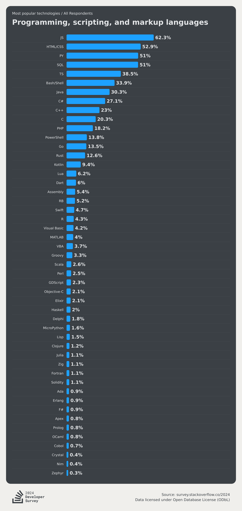

Présentation de Perl et Ruby
Perl
Introduction
Perl est un langage de programmation dynamique et interprété, créé par Larry Wall en 1987. Il est particulièrement bien adapté à la manipulation de texte et à l'extraction de données, ce qui le pousse à être assez adéquat pour de l'admistration de système Unix, ceci étant fortement basés sur la manipulation de texte.
Cependant Perl est de moins en moins utilisé de nos jours, selon le dernier sondage Stackoverflow Perl est à 2.5% d'utilisation parmis les développeurs ayant répondus. Ce nombre est à mettre face à celui de Python qui est de 51%.
La plupart des interactions avec ce langage ce font via la maintenance de vieux scripts et outils legacy. Il est suffisamment lisible pour qu'une personne étant habitué à un autre langage de scripting généraliste comme Python puisse en lire sans trop de problèmes.
Son principal avantage vient de la puissance et flexibilité de ses Regex, cependant la plupart des autres outils utilisent désormais la même syntaxe d'expression régulières.
Exemple de Code
Utilisations Courantes
- Traitement de texte et extraction de données
- Scripts d'administration système
Ruby
Introduction
Ruby est un langage de programmation dynamique et interprété, créé par Yukihiro "Matz" Matsumoto et publié pour la première fois en 1995. Ruby est conçu pour être simple à utiliser et productif, en mettant l'accent sur l'élégance et la lisibilité du code.
Ruby, tout comme Perl, est assez peu utilisé avec 5% des utilisateurs de Stackoverflow l'utilisant. La plupart de ses utilisateurs ne l'utilisent pas pour de l'administration système contrairement à Perl mais plutôt pour de webdev via le framework de backend web Ruby on Rails utilisé dans certain écosystème.
Caractéristiques Principales
- Simplicité et Productivité : Ruby est conçu pour être facile à lire et à écrire, favorisant une syntaxe naturelle et concise.
- Orienté Objet : En Ruby, tout est objet, ce qui permet une approche unifiée de la programmation.
- Ruby on Rails : Un framework web populaire et puissant qui a contribué à la popularité de Ruby pour le développement web.
Exemple de Code
Utilisations Courantes
- Développement web avec Ruby on Rails
Bien que Perl et Ruby ne soient plus aussi populaires qu'ils l'étaient, ils restent des langages puissants avec des cas d'utilisation spécifiques. Perl continue d'être utilisé pour la maintenance d'anciens scripts, tandis que Ruby, grâce à Ruby on Rails, est encore une option solide pour le développement web. Toutefois, les nouveaux projets peuvent préférer des langages plus modernes et largement adoptés comme Python, JavaScript, ou Go.
